Ensemble Administration |
Operations Staff |
Design Staff |
Battery Staff |
Front Ensemble Staff |
Visual Ensemble Staff |
Audio Staff |
Media Staff |
|
Nick Riley
-
Director
|
Barb Terrell
-
Director of Operations
|
Nick Riley
-
Program Coordinator
|
Sean Girvin
-
Battery Coordinator
|
Evan Sasowsky
-
Front Ensemble Coordinator
|
Kristen Frederico
-
Coordinator
|
Zach Albert
-
Coordinator
|
Carlee McAfee
-
Coordinator
|

nick riley
Director, program coordinator & Ensemble Coordinator
President, CPAA, Inc. Board of Directors
Nick Riley is thrilled to return to ConneXus for his 13th season in 2025.
Currently, Nick leads both the ensemble and show design as Director, Program Coordinator, and Ensemble Coordinator for ConneXus. He previously held numerous other administrative, creative, and instructional roles since co-founding the ensemble in the summer of 2012. Nick has also served as President of the ConneXus Performing Arts Association, Inc. Board of Directors since 2016. Nick led both the ensemble and design teams each time ConneXus made WGI World Championships Finals for the first time: PIO in 2015 and PIW in 2023.
Nick has been involved in the pageantry arts as a performer, instructor, composer/arranger, ensemble administrator, and adjudicator for over 20 years. Currently, Nick is pursuing a PhD in Music Education at The Ohio State University where he is a fully-funded graduate teaching associate for the School of Music. At OSU, he instructs undergraduate courses in music education, instrumental techniques, and supervises student teachers. A classically trained percussionist, Nick earned a Master of Arts in Music Education from The Ohio State University in 2023 and a Bachelor of Music in Music Education from Capital University in 2011. Prior to pursuing his graduate studies full-time, Nick was the Director of Bands for Liberty Center Local Schools in rural northwest Ohio from 2012 to 2021 where he successfully led all aspects of the band program to prominence.
Nick is the founder of the web-based pageantry arts music design business NPR Marching Concepts: The Music of Nick Riley where he has composed nearly 600 works for over 60 ensembles since beginning his writing career in 2007. A prolific composer for marching bands, indoor percussion ensembles, drum corps, and winter winds, Nick’s compositions can be heard across the United States and South America. In addition to publishing his own work, Nick’s compositions for indoor percussion are published by Gary P. Gilroy Publications and Marching Show Concepts. Nick ’s music has been recognized for its creativity, engagement, educational value, and competitive success. Ensembles performing Nick ’s music have been local circuit, BOA, SoundSport, and WGI medalists.
Nick is an accomplished adjudicator for the pageantry arts, judging actively for the Central States Judges Association since 2013 and the Ohio Music Education Association since 2012. Specializing in music general effect, music performance, and percussion, he has judged in ten states. He has been selected to adjudicate the Mid-States Band Association Circuit Championships annually since 2017. Nick has judged championship-level competitions in Ohio, Kentucky, Pennsylvania, Nebraska, and Kansas.
Nick is actively involved in circuit administration and contest coordination for indoor percussion, winter guard, and winter winds. Recently, Nick was re-elected to The Mid-East Performance Association Board of Directors as a Percussion Representative, a position he has held since 2022.
Nick’s previous staff assignments reflect a diverse background in the pageantry arts. He has served as the Assistant Visual Supervisor for Legends Drum &Bugle Corps (2011-2013), a Percussion Consultant for The Ohio State University Marching Band (2011-2014), Front Ensemble Instructor for Pioneer Drum &Bugle Corps (2014), and Visual Technician for the Colts Drum &Bugle Corps (2016). Nick is currently the Percussion Composer/Arranger for the Gran Banda Drum &Bugle Corps of Medellin, Colombia, South America, where he has served on both the percussion and visual staffs since 2014. The “GB” is the 2014 DCI SoundSport Champion, runner up in 2017, and the first ensemble from South America to perform in DCI events.
Nick is a member of OMEA, CSJA, PFCJ, NAfME, and PAS. Nick holds endorsements from Vic Firth and Black Swamp Percussion.
A native of Centerville, Ohio, Nick currently lives in Dublin, Ohio near Columbus.

Michael Reese
Director & Music coordinator
Member, CPAA, Inc. Board of Directors
ConneXion Educational Director
Michael is an active music educator in the state of Ohio where he is a band director for Mason City Schools. He works primarily with the 7th and 8th grade students at Mason Middle School and as the Front Ensemble Coordinator for the BOA Grand Nationals Finalist William Mason High School Marching Band. Michael has earned a Bachelor of Music Education from Marietta College and a Masters of Music Education from Ohio University.
Outside of his public school teaching career, Michael has extensive experience in the marching arts. Michael has served as a Co-Director of ConneXus since 2022 and is excited to take on a new role as Music Coordinator for the 2025 season. Additionally, Michael has worked as a Front Ensemble Instructor for the Madison Scouts Drum and Bugle Corps for the last five years. In the fall, Michael is a percussion judge for the Central States Judges Association. During his performing years, Michael marched with Legends Drum and Bugle Corps (2014), Cap City Percussion (2014-2015), Madison Scouts Drum and Bugle Corps (2015-2016) and Rhythm X (2016-2017).

Barb Terrell
Director of operations
Barb Terrell is a front ensemble coordinator at several Cincinnati-area high schools. She holds a bachelors degree in Business Administration from the University of Cincinnati.
Barb has been involved with the marching arts since 2012 and has performed with many groups including Milford HS marching band and indoor percussion, the University of Cincinnati Marching Band, Cincinnati Tradition, the Columbus Saints, and ConneXus.
Barb spent her entire independent indoor career in the front ensemble at ConneXus and she is looking forward to her first season as part of the admin team.
Barb Terrell
Director of operations
Barb Terrell is a front ensemble coordinator at several Cincinnati-area high schools. She holds a bachelors degree in Business Administration from the University of Cincinnati.
Barb has been involved with the marching arts since 2012 and has performed with many groups including Milford HS marching band and indoor percussion, the University of Cincinnati Marching Band, Cincinnati Tradition, the Columbus Saints, and ConneXus.
Barb spent her entire independent indoor career in the front ensemble at ConneXus and she is looking forward to her first season as part of the admin team.
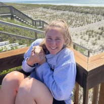
Dr. Alyssa Iwinski
Medical Advisor
Alyssa Iwinski has been a part of the marching arts since 2007, having marched with Phantom Regiment, Tates Creek, Gateway Indoor, and Matrix.
Since aging out in 2015, she has participated in Matrix Taiwan and has taught at Legacy, Veritas, and the Madison Scouts.
She is currently practicing as a Doctor of Physical Therapy in an outpatient orthopedic setting, with a special interest in athletic and neurological populations. She has enjoyed integrating her skills from her academic background with her passion for education and percussion performance and has worked as a health and wellness coordinator for WGI ensembles.
In her free time, Alyssa enjoys spending time with her husband, cooking and hosting, being active outdoors, and snuggling with her sweet kitten Amelia.
Kristen Frederico, LPC, LSC
Visual Ensemble Coordinator & Mental Health Advisor
Kristen Frederico is an Akron, Ohio native and marched as a member of the visual ensemble for Matrix Performing Arts in 2014, 2015, and 2016. Additionally, she has consulted, choreographed and taught for several high school color guard and percussion programs throughout Ohio, becoming involved with Tippecanoe High School, Kettering Fairmont High School, Nordonia High School, Avon Lake High School, and Norton High School.
Kristen graduated from Wright State University with a Master of Education in School Counseling and a Master of Science in Clinical Mental Health Counseling. Now working in private practice, she has garnered experience working in youth partial hospitalization, serving as a school-based mental health therapist at Beavercreek High School, and working with her certified therapy dog to bring emotional support assistance and education to local area schools. Kristen is also the Director of Operations for the Psi Alpha International Honor Society for High School Psychology, a non-profit organization focused on promoting psychology as a science at the high school education level.
Kristen currently resides in Dayton, Ohio with her husband, JJ Frederico and their two dogs, Eli and Zaya.
2025 will be Kristen’s third season on staff with ConneXus.
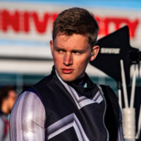
Alex Buckley
Member Experience
Alex Buckley is a current student at The Ohio State University where he is pursuing his Bachelor’s degree in Music Education. He is currently a student teacher at Hilliard Bradley HS in Hilliard, Ohio.
Alex is originally from Highlands Ranch, Colorado. He has been a member of the marching arts with Rise 2 Percussion (‘18-’19), the University of Kansas Marching Jayhawks (‘19), and ConneXus (‘24). Along with the marching arts he has been involved in a multitude of concert programs including the American Prize winning KU Wind Ensemble, KU Choirs, OSU Wind Symphony, and OSU Symphonic Band.
In addition to performing, he is active in education across the country where he has helped multiple different front ensembles as a consultant for their marching band and indoor programs. Alex is passionate about developing the next generation of musicians and human beings; he believes music is a great stepping stone to the next stages of life whether it be in music or not.
He is excited to work with ConneXus on the Admin Team this year and work with an incredible organization.
2025 is Alex ’s first season on staff with ConneXus.
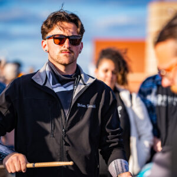
Brian Smith
Stage Manager
Brian Smith is a dedicated percussion educator and musician with a deep-rooted passion for the marching arts. Graduating from Bellbrook High School in 2019, Brian embarked on a journey in the world of drum corps, starting with the Shadow Drum &Bugle Corps where he marched as a snare drummer in the corps final season in DCI. From the competitive seasons of 2020 through 2024, Brian continued his journey with ConneXus, further honing his skills and leadership as a marching snare drummer.
Beyond his performance career, Brian has made significant contributions to music education in the Dayton, OH area. He has served as an instructor for numerous high school percussion programs, imparting his expertise in technique, musical interpretation, and overall ensemble cohesion. Brian’s teaching philosophy emphasizes not only technical excellence but also the development of a supportive and disciplined environment where students can thrive both as musicians and individuals.
With a strong commitment to fostering musical talent and a proven track record in the marching arts, Brian continues to inspire and mentor the next generation of percussionists across his community.
2025 is Brian ’s first season on staff with ConneXus.

Matthew Wakenell
Transportation
Matthew is thrilled to be a part of the ConneXus Operations Staff for the 2025 season.
Matthew is currently an active performer in DCI All-Age and works day-to-day as a Technical Support Technician for Daimler Truck North American in the Service Engineering department.
Matthew started his marching experience at Plymouth-Canton Educational Park in 2015 and then went on to groups such as LSM Winds (2018 WGI WIA Bronze Medalist, 2021), Lake Effect Percussion (2020), Matrix A (2022 WGI PIA Gold Medalist), Redline (2023), and now is currently marching with Cincinnati Tradition (2023, 2024).
In his free time, he also builds and works on performance vehicles. Matthew currently resides in the metro-Detroit area in Michigan.
2025 is Matthew ’s first season on staff with ConneXus.
Sam Lyon
Rehearsal sites
Sam Lyon is super excited to be joining the ConneXus admin support staff for the 2024 season. Sam started her marching career at Westerville North High School and marched until graduating in 2018. She played both trumpet and marimba in the marching band in high school. She joined ConneXus in the 2017 season as a rack player, then played vibraphone with the ensemble until her last marching season in 2020.
Sam currently resides in Delaware, Ohio where she completed her IT education at My Computer Career and is continuing to pursue her IT career. She spends her free time spending time with her boyfriend Josh and their cat Luci.

John Espy
Fundraising
John Espy is current a financial software specialist in the Cincinnati area. Prior to his position in school finance, Mr. Espy was a Band Director in the Milford Exempted Village School District located on the east-side of the Cincinnati, OH area. At Milford, Mr. Espy’s concert ensembles consistently received Superior ratings at Ohio Music Education Association events; the Marching Band is a consistent Bands of America Semi-Finalist; and the Winter Percussion Ensemble has been WGI Scholastic A class World Finalists. Mr. Espy earned his undergraduate degree in music education from Marshall University in Huntington, WV, a Master of Business Administration from Xavier University in Cincinnati, OH, and is currently pursuing a Master of Science in Accounting. Before coming to Milford, Mr. Espy was the Director of Bands for the Mt. Healthy City School District, as well as percussion arranger and caption head at Cabell Midland High School located in Ona, WV.
Mr. Espy’s performance credits include the front ensemble for the Capital Regiment Drum and Bugle Corps from Columbus, Ohio, as well as the 18-time World Champion Concord Blue Devils Drum and Bugle Corps from Concord, California. John was a member of the Marching Thunder (MU) snare line serving two years as drumline captain. Mr. Espy has also served as percussion arranger and instructor for the Marshall University Marching Thunder. During his time playing drums in the Marshall 12 O’clock Jazz Ensemble, John performed with Arturo Sandoval, Kathy Kosins, Byron Stripling, Paquito D’Rivera just to name a few. He was a recognized award winner at the prestigious Notre Dame Jazz Festival having been awarded honors by legendary drummer Peter Erskine. Currently, Mr. Espy a member of the Cincinnati-based Fillmore Wind Band that performed at 2017 Midwest Band Clinic.
Mr. Espy is an active adjudicator as well as a member of the Vic Firth Education Team in the capacity of marching percussion specialist (MPS) and Scholastic Educator (SEP).
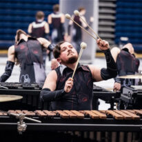
Austin Sharp
merchandise
Austin Sharp is from Cincinnati, Ohio and attended La Salle High School. Austin performed with ConneXus for 8 seasons from 2015 to his ageout in 2022, playing rack, vibraphone, and marimba in the front ensemble. Austin ’s additional performance experience includes Cincinnati Tradition (2017-2019) and Rhythm In Blue (2023).
Austin is an in-demand front ensemble educator in southwestern Ohio. He currently instructs William Henry Harrison HS and Forest Hills HS.
2025 is Austin ’s second year on staff with ConneXus. He is very excited to be a part of the team and can ’t wait to get started.

Kristin Stoner
cymbal technician & alumni relations coordinator
Secretary, CPAA, Inc. Board of Directors
Kristin Stoner has been involved in the marching arts since 2004, performing with many ensembles including Pickerington North HS Marching Band, the Pride of Mid-America Marching Band at Ball State University, the Falcon Marching Band at Bowling Green State University, Pioneer Drum &Bugle Corps, and Matrix.
Her past instructional experience has included percussion and visual instruction for high school and university marching bands, indoor percussion ensembles, and drum corps.
She holds a BS in Biology from Bowling Green State University and is a Learning Business Consultant in Columbus, Ohio.
Kristin is excited to start her 11th season with ConneXus in 2025!

Andre Rodriguez
Webmaster
Member, CPAA, Inc. Board of Directors
Andre Rodriguez is based out of Troy, OH and is a Full Stack Developer and Data Analyst for Google Stores, HP and Intel Retail Programs around the globe. Andre is a founding member of ConneXus where he marched snare drum from 2013 to 2015. Andre is ConneXus ’first ever ageout member.
Andre has been involved in the marching arts since 2006 where he began his career at Westerville South HS in central Ohio. The exposure he received as a member of the band program at Westerville South aided in the path that has led him back to his first independent ensemble. Giving back to the programs that have aided Andre has always been a passion of his and being able to assist his ageout group makes him extremely happy and eager to hit the ground running.
Now having a background in data and technology, Andre will be working with the admin team to assist on the back end as Webmaster where he ’s had success with organizations such as Abercrombie &Fitch and Google on a national scale. His goal is to help wherever the ensemble needs him in order to be successful throughout the upcoming seasons.
Andre is thrilled to return to ConneXus for his third season on staff in 2025, backed by the support of his daughter Era and partner Emily.

Melissa Gouge
Operations Staff Member
Melissa started her performing arts journey at a young age as a performer in the Cincinnati Ballet ’s production of Cinderella. She has since moved to the marching arts where she has played both flute and marched with the color guard at both the high school and college level.
In 2022, Melissa graduated from Ohio Northern University with a degree in Biochemistry and is currently a PhD student in the University of Cincinnati ’s Molecular Genetics, Biochemistry, and Microbiology graduate program. Melissa marched with Phoenix Independent in 2019 and 2022.
Melissa currently teaches guard at Harrison High School and has previously taught at La Salle High School.

Jamie Albert, RN
Operations staff member
Jamie is a Registered Nurse with 13 years of experience in cardiac care and home health. Jamie holds a Bachelor of Science in Nursing from Wright State University and a Master of Science in Nursing Leadership from Western Governors University. She manages home health care agencies for The Ohio State University in Cincinnati.
Jamie is also a photographer specializing in concert and performance photography through her business, Studio 73 Photography. She has captured pictures of multiple performance ensembles for both MEPA and WGI. Her work has been published in Aurora Magazine and “The Dynamic Marching Band.” Jamie also has experience in custom apparel creation as the former owner of Finally Gotcha Covered Custom Apparel.
Jamie has been an enthusiastic supporter of the marching arts for 15 years as a band parent, including 4 years as a parent of a ConneXus performer.
Jamie resides in Dayton, Ohio.
2025 is Jamie ’s third season on staff with ConneXus.
nick riley
Director, program coordinator & Ensemble Coordinator
President, CPAA, Inc. Board of Directors
Nick Riley is thrilled to return to ConneXus for his 13th season in 2025.
Currently, Nick leads both the ensemble and show design as Director, Program Coordinator, and Ensemble Coordinator for ConneXus. He previously held numerous other administrative, creative, and instructional roles since co-founding the ensemble in the summer of 2012. Nick has also served as President of the ConneXus Performing Arts Association, Inc. Board of Directors since 2016. Nick led both the ensemble and design teams each time ConneXus made WGI World Championships Finals for the first time: PIO in 2015 and PIW in 2023.
Nick has been involved in the pageantry arts as a performer, instructor, composer/arranger, ensemble administrator, and adjudicator for over 20 years. Currently, Nick is pursuing a PhD in Music Education at The Ohio State University where he is a fully-funded graduate teaching associate for the School of Music. At OSU, he instructs undergraduate courses in music education, instrumental techniques, and supervises student teachers. A classically trained percussionist, Nick earned a Master of Arts in Music Education from The Ohio State University in 2023 and a Bachelor of Music in Music Education from Capital University in 2011. Prior to pursuing his graduate studies full-time, Nick was the Director of Bands for Liberty Center Local Schools in rural northwest Ohio from 2012 to 2021 where he successfully led all aspects of the band program to prominence.
Nick is the founder of the web-based pageantry arts music design business NPR Marching Concepts: The Music of Nick Riley where he has composed nearly 600 works for over 60 ensembles since beginning his writing career in 2007. A prolific composer for marching bands, indoor percussion ensembles, drum corps, and winter winds, Nick’s compositions can be heard across the United States and South America. In addition to publishing his own work, Nick’s compositions for indoor percussion are published by Gary P. Gilroy Publications and Marching Show Concepts. Nick ’s music has been recognized for its creativity, engagement, educational value, and competitive success. Ensembles performing Nick ’s music have been local circuit, BOA, SoundSport, and WGI medalists.
Nick is an accomplished adjudicator for the pageantry arts, judging actively for the Central States Judges Association since 2013 and the Ohio Music Education Association since 2012. Specializing in music general effect, music performance, and percussion, he has judged in ten states. He has been selected to adjudicate the Mid-States Band Association Circuit Championships annually since 2017. Nick has judged championship-level competitions in Ohio, Kentucky, Pennsylvania, Nebraska, and Kansas.
Nick is actively involved in circuit administration and contest coordination for indoor percussion, winter guard, and winter winds. Recently, Nick was re-elected to The Mid-East Performance Association Board of Directors as a Percussion Representative, a position he has held since 2022.
Nick’s previous staff assignments reflect a diverse background in the pageantry arts. He has served as the Assistant Visual Supervisor for Legends Drum &Bugle Corps (2011-2013), a Percussion Consultant for The Ohio State University Marching Band (2011-2014), Front Ensemble Instructor for Pioneer Drum &Bugle Corps (2014), and Visual Technician for the Colts Drum &Bugle Corps (2016). Nick is currently the Percussion Composer/Arranger for the Gran Banda Drum &Bugle Corps of Medellin, Colombia, South America, where he has served on both the percussion and visual staffs since 2014. The “GB” is the 2014 DCI SoundSport Champion, runner up in 2017, and the first ensemble from South America to perform in DCI events.
Nick is a member of OMEA, CSJA, PFCJ, NAfME, and PAS. Nick holds endorsements from Vic Firth and Black Swamp Percussion.
A native of Centerville, Ohio, Nick currently lives in Dublin, Ohio near Columbus.

Andrew Markworth
front ensemble composer/arranger
Andrew Markworth is a composer, arranger and consultant writing wind, front ensemble and battery percussion for marching bands, indoor drumlines and drum corps.
He is currently the music arranger and coordinator for the Crossmen Drum and Bugle Corps from San Antonio, TX and The Company Performance Ensemble of Great Britain. He also is the music director for Rhythm X; both the 3 time gold medalist percussion group (2008, 2009, 2013) and the 2 time gold medalist winds group (2015, 2017). Andrew was the Front Ensemble Arranger/Coordinator for Carolina Crown from 2007-2014.
Andrew currently resides in Centerville, Ohio with his wife Kara, daughter Natalie, and son Brady.

Ryan Ellis
battery composer/arranger
Ryan Ellis is an active battery arranger, visual designer, and drill writer for marching bands, indoor drumlines, and drum corps. He has performed with Rhythm X, Blue Devils Drum &Bugle Corps, Bluecoats Drum &Bugle Corps, and the Spirit of Atlanta Drum &Bugle Corps.
Ryan currently serves as both the Percussion Caption Head and Battery Arranger for the Madison Scouts Drum &Bugle Corps.
Ryan currently lives in Cincinnati, Ohio with his wife Kayla.

Tyler Shipe
vISUAL dESIGNER
Tyler Shipe brings a wealth of experience and a passion for visual design to our ensemble as the Visual Designer. With a teaching career spanning back to 2004, Tyler has honed his skills in the world of visual design, leaving an indelible mark on several renowned groups.
Tyler lives in Minneapolis and previously served as the visual designer for MBI Indoor. He also works with River City Rhythm Drum and Bugle Corps, MBI Winds, MN Brass SoundSport, and is the co-director of Irondale High School. Notably, under his guidance, Irondale HS has been a consistent top finisher in visual and effect-visual captions at WGI, including silver medalist finish in 2018, and gold in 2023.
His previous marching experience includes marching cymbals, playing guitar in the front ensemble, and as a mellophone player and drum major with the Blue Stars Drum and Bugle Corps.
Outside of his passion for music and design, he is a Home Lending Advisor with Chase. He and his wife Bre stay busy by working on their 100 year old craftsman home.
2025 marks Tyler ’s second season with ConneXus.

molly favret
Graphics
A true veteran of the pageantry arts, Molly brings over 15+ years of performing, instruction, and design experience to the activity.
An alumnus of Kennesaw State University, Molly has held significant design roles with prestigious organizations such as Tarpon Springs HS, Paramount Winter Guard, Crossmen, Carolina Crown, and many other scholastic programs.
Her fresh perspective on what’s trending combined with years of graphic design experience makes her a dynamite force in the world of marching arts.
From set design as a Band Today artist to stretch wear and graphic design with Fred J. Miller,
Molly looks forward to her 8th year working with the ConneXus organization!
Michael Reese
Director & Music coordinator
Member, CPAA, Inc. Board of Directors
ConneXion Educational Director
Michael is an active music educator in the state of Ohio where he is a band director for Mason City Schools. He works primarily with the 7th and 8th grade students at Mason Middle School and as the Front Ensemble Coordinator for the BOA Grand Nationals Finalist William Mason High School Marching Band. Michael has earned a Bachelor of Music Education from Marietta College and a Masters of Music Education from Ohio University.
Outside of his public school teaching career, Michael has extensive experience in the marching arts. Michael has served as a Co-Director of ConneXus since 2022 and is excited to take on a new role as Music Coordinator for the 2025 season. Additionally, Michael has worked as a Front Ensemble Instructor for the Madison Scouts Drum and Bugle Corps for the last five years. In the fall, Michael is a percussion judge for the Central States Judges Association. During his performing years, Michael marched with Legends Drum and Bugle Corps (2014), Cap City Percussion (2014-2015), Madison Scouts Drum and Bugle Corps (2015-2016) and Rhythm X (2016-2017).

Cameron Halls
Visual Coordinator & Snare Technician
Cam Halls is a percussion educator and arranger based in Dayton, OH. He received his Bachelor’s degree in Music Education from Michigan State University, studying with Dr. Jon Weber and Professor Gwendolyn Dease. While at MSU he performed with their Marching Band, Percussion Ensemble, and Wind Ensemble. Cam was a member of DCI/WGI groups including the Blue Devils, Carolina Crown, Rhythm X, and NorthCoast Academy. He served on the percussion staff for the Madison Scouts from 2020-2023.
Cam is currently a band director at Bellbrook HS/MS and a freelance percussion designer. He resides in Bellbrook OH, where he lives with his fiancé Kaia Ro and their three feline friends. Cam is a Vic Firth/Zildjian educational artist and proudly endorses their products.
2025 is Cam ’s second season on staff with ConneXus.
Sean Girvin
Battery Coordinator
Sean began his performance career with Westerville North HS in 2012. He then went on to march his first season with ConneXus in 2016. He continued with the group through their transition to PIW in 2019 and marched his final season in 2020. Sean also spent one summer with the Crossmen in 2016 and one summer with Carolina Crown in 2018.
He has spent time teaching at a few high schools in the Cincinnati area including Oak Hills HS, Forest Hills HS, and Milford HS where he has served as the Battery Coordinator since 2021. Sean also arranged for the Milford HS marching band during the 2023 season. Sean spent the winter of 2022 on the snare staff with ConneXus and worked with the Cincinnati Tradition Drum &Bugle Corps percussion staff in 2022 and 2023. He also worked with the Madison Scouts on the snare staff in 2024. Sean has been the Battery Coordinator at ConneXus since 2023.
Sean currently resides in Cincinnati, Ohio where he received a bachelor’s degree in neuroscience from the University of Cincinnati.
2025 is Sean ’s fourth season on staff with ConneXus.

Evan Sasowsky
fRONT eNSEMBLE cOORDINATOR
Evan Sasowsky is ecstatic to be back at ConneXus for another season with the front ensemble!
Evan is a front ensemble fanatic, having begun his career as a marching mallet player at the University of Cincinnati. His experience there quickly inspired him to seek independent marching activities, landing him on a marimba at the Notre Dame Indoor Percussion Ensemble (PIA/PIO) in the 2014 WGI season. This first season would prove to be the impetus that drew him to continue a passion for the marching arts, particularly in the realm of indoor pageantry. Evan followed his first season of indoor with a season at Tates Creek Indoor Ensemble (PIW), where he was the center marimba player and section leader of the front ensemble in the 2015 season. For his final two seasons as a performer in WGI, Evan chose to march at Rhythm X (PIW), where he played marimba for the 2016 and 2017 seasons. He marched his age-out DCI season in 2016 with the Crossmen Drum &Bugle Corps from San Antonio, TX.
Evan has worked with bands of all sizes in south and central Ohio, including Lakota West HS, Fairfield HS, Elder HS, Sycamore HS, Walnut Hills HS, and Conner HS. He also taught at Tates Creek/Triple Crown Indoor, Cincinnati Tradition Drum &Bugle Corps, and Columbus Saints Drum &Bugle Corps.
Evan currently lives in Cincinnati, OH, where he is a data engineer at Fifth Third Bank. He received dual bachelor ’s degrees in Business Analytics and Information Systems at the University of Cincinnati in 2022. In his free time he likes to play video and board games, go to the Ohio Renaissance Festival with his girlfriend, Barb, and play with his cats, Summer and Jackie.
2025 will be Evan’s third year on staff with ConneXus.
Kristen Frederico, LPC, LSC
Visual Ensemble Coordinator & Mental Health Advisor
Kristen Frederico is an Akron, Ohio native and marched as a member of the visual ensemble for Matrix Performing Arts in 2014, 2015, and 2016. Additionally, she has consulted, choreographed and taught for several high school color guard and percussion programs throughout Ohio, becoming involved with Tippecanoe High School, Kettering Fairmont High School, Nordonia High School, Avon Lake High School, and Norton High School.
Kristen graduated from Wright State University with a Master of Education in School Counseling and a Master of Science in Clinical Mental Health Counseling. Now working in private practice, she has garnered experience working in youth partial hospitalization, serving as a school-based mental health therapist at Beavercreek High School, and working with her certified therapy dog to bring emotional support assistance and education to local area schools. Kristen is also the Director of Operations for the Psi Alpha International Honor Society for High School Psychology, a non-profit organization focused on promoting psychology as a science at the high school education level.
Kristen currently resides in Dayton, Ohio with her husband, JJ Frederico and their two dogs, Eli and Zaya.
2025 will be Kristen’s third season on staff with ConneXus.

Drew Brown
Design ConsultANT
Vice President, CPAA, Inc. Board of Directors
Drew Brown has been involved with the marching arts since 2001 as a performer, educator, and
designer. He is currently the Program Coordinator of ConneXus and Vice President of the ConneXus Performing Arts Association, Inc. Board of Directors.
From 2015-2019, Drew worked with the Colts Drum &Bugle Corps as a front ensemble technician, front ensemble coordinator, and electronics coordinator. In 2020 and 2021, Drew worked with the Crossmen Drum &Bugle Corps as a front ensemble technician.
Currently, Drew is the Percussion Director for Beavercreek City Schools, where he teaches marching band, indoor percussion ensemble, and classroom percussion to high school and middle school students in the district.
Drew studied music education, composition, and percussion performance at Bowling Green State University, Wright State University, and the University of Cincinnati – College-Conservatory of Music.
Drew is proud to be endorsed by Innovative Percussion, Evans Drumheads, Sabian Cymbals, and
Ludwig/Musser.
He currently resides in Dayton, OH with his wife, Cierra, and their dogs, Bobo and Duke.
Sean Girvin
Battery Coordinator
Sean began his performance career with Westerville North HS in 2012. He then went on to march his first season with ConneXus in 2016. He continued with the group through their transition to PIW in 2019 and marched his final season in 2020. Sean also spent one summer with the Crossmen in 2016 and one summer with Carolina Crown in 2018.
He has spent time teaching at a few high schools in the Cincinnati area including Oak Hills HS, Forest Hills HS, and Milford HS where he has served as the Battery Coordinator since 2021. Sean also arranged for the Milford HS marching band during the 2023 season. Sean spent the winter of 2022 on the snare staff with ConneXus and worked with the Cincinnati Tradition Drum &Bugle Corps percussion staff in 2022 and 2023. He also worked with the Madison Scouts on the snare staff in 2024. Sean has been the Battery Coordinator at ConneXus since 2023.
Sean currently resides in Cincinnati, Ohio where he received a bachelor’s degree in neuroscience from the University of Cincinnati.
2025 is Sean ’s fourth season on staff with ConneXus.
Cameron Halls
Visual Coordinator & Snare Technician
Cam Halls is a percussion educator and arranger based in Dayton, OH. He received his Bachelor’s degree in Music Education from Michigan State University, studying with Dr. Jon Weber and Professor Gwendolyn Dease. While at MSU he performed with their Marching Band, Percussion Ensemble, and Wind Ensemble. Cam was a member of DCI/WGI groups including the Blue Devils, Carolina Crown, Rhythm X, and NorthCoast Academy. He served on the percussion staff for the Madison Scouts from 2020-2023.
Cam is currently a band director at Bellbrook HS/MS and a freelance percussion designer. He resides in Bellbrook OH, where he lives with his fiancé Kaia Ro and their three feline friends. Cam is a Vic Firth/Zildjian educational artist and proudly endorses their products.
2025 is Cam ’s second season on staff with ConneXus.

Jordan Kracus
Assistant bATTERY cOORDINATOR & Snare Technician
Jordan started his marching career in 2011 at Xenia High School and moved to Bellbrook High School in 2014.
After graduating, he spent the summer of 2016 on tour in Crossmen’s snareline and spent the next 3 winters in ConneXus where he aged out during their first year in PIW in 2019.
He has taught at several schools in the Dayton area including Bellbrook High School, Kettering Fairmont High School, Milford High School, and Northmont High School where he was the battery arranger/coordinator.
2025 is Jordan ’s fourth season on staff with ConneXus.

Josh Green
snare Technician
Originally from Hebron, Ohio, Josh Green has an extensive background in music performance and education. Josh has been a member of concert and symphonic bands, jazz bands, world music ensembles, and marching programs playing percussion and bass guitar. While attending Ohio University, he was a member of the Marching 110 where he played snare and served as the section leader of the drumline. Additionally, he performed with the Crossmen Drum &Bugle Corps and ConneXus.
Josh has had the opportunity to arrange and compose for the Marching 110 Drumline as well as several high schools throughout Ohio. He continues to work as a freelance percussion arranger/composer, instructor, and private lessons teacher. Josh is currently the Percussion Director at Westerville South HS and was previously the Percussion Instructor at Lakewood HS and a Battery Technician at Columbus Saints Drum &Bugle Corps.
Josh graduated from Ohio University with a Bachelor of Science in Communications with a major in Integrated Media, a minor in Music, and a certificate in Social Media. He will be continuing his education this fall to pursue a Bachelor of Music Education at The Ohio State University.
Josh is excited to return to ConneXus for his third season on staff in 2025!
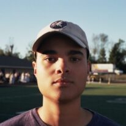
David Ware
Snare Technician
David is a software engineer and battery instructor based out of the Dayton area. He received his BS in Computer Science from West Virginia University and is currently working full-time as a data engineer at Realtor.com.
As a performer, David spent multiple years with Rhythm X and the Bluecoats Drum &Bugle Corps. As an educator, he has served as a battery instructor for several high schools, including Bellbrook HS and Centerville HS.
2025 will be his first year on staff with ConneXus.
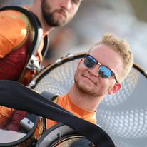
Dylan Sammons
Tenor technician
Dylan Sammons began his marching career in 2011 with Milford High School in Cincinnati, OH. He began his time in the independent scene marching tenors with ConneXus in 2018, and stayed until his age out in 2020. He was also a member of the 2018 Madison Scouts.
His instructional experience includes teaching the battery at multiple schools around the Cincinnati/Dayton area. Currently, he resides in Cincinnati where he is the tenor technician at Milford High School.
2025 is Dylan ’s fourth season on staff with ConneXus.
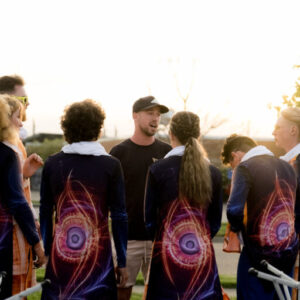
Ethan Wright
bass drum technician
An Indianapolis native, Ethan found his beginning as a performer with the Center Grove HS band and indoor percussion programs and has been a prolific educator in the Indianapolis community ever since. After graduating from Center Grove, Ethan performed with Legacy Indoor Percussion, Pacific Crest Drum &Bugle Corps, and Matrix.
Since his days as a member, Ethan has served as an instructor for many local high school programs and currently serves as the bass technician at Center Grove HS. He has also been an instructional staff member at Veritas, Music City Drum &Bugle Corps, and Spirit of Atlanta Drum &Bugle Corps.
He currently resides in Indianapolis, IN with his cat Charlotte where he works as a Graphic Designer while studying full-time at Arizona State University. You can also see him performing with the Indianapolis Colts Drumline.
Ethan is excited to return to ConneXus for his fourth season in 2025.

Henry Iwinski
Bass technician
Henry Iwinski began his marching career in Lexington, Kentucky following closely behind his older sister Alyssa. After watching her perform in Tates Creek in 2011, he joined the drumline at Henry Clay High School to follow in her footsteps. By 2013 he joined Alyssa at TCIE and continued to march with her in Gateway 2014 and her age out in 2015 at Matrix (with Zac Sterling, his now-brother-in-law).
Henry continued his indoor marching career with Matrix 2016 and 2017 where he also got invited to perform with Matrix International in Taiwan. During this time he also marched the same years with Phantom Regiment. After a year break, he aged out at Rhythm X in 2019. From 2020 through 2023, he has been a bass drum tech at Cap City Percussion.
Henry has a bachelor’s degree in chemistry and currently works in a lab as a quality control chemist in Lexington, KY. Outside of his professional life he enjoys golfing and going to local breweries.
2025 is Henry ’s second season on staff with ConneXus.
Jack Flood
Bass technician
Jack Flood is a percussion educator in the Dayton-Cincinnati area. Originally from Canton, MI, he began drumming at age 7 and attended Plymouth-Canton Educational Park. His marching career continued at Crossmen, Carolina Crown, Redline, and Rhythm X.
Jack is currently the Percussion Director at Springboro High School and a battery technician at William Mason High School. In the 2024 DCI season, he was on staff with the Madison Scouts and Cavaliers. He has worked with many high schools throughout his teaching career including Southgate Anderson, Lake Orion, Lebanon, Novi, Plymouth, Walled Lake Central, and Walled Lake Western.
I n his free time, Jack loves hiking and nature photography. He also enjoys listening to and producing music. He actively collects records and constantly has something playing.
2025 is Jack’s third year on staff with ConneXus.
Kristin Stoner
cymbal technician & alumni relations coordinator
Secretary, CPAA, Inc. Board of Directors
Kristin Stoner has been involved in the marching arts since 2004, performing with many ensembles including Pickerington North HS Marching Band, the Pride of Mid-America Marching Band at Ball State University, the Falcon Marching Band at Bowling Green State University, Pioneer Drum &Bugle Corps, and Matrix.
Her past instructional experience has included percussion and visual instruction for high school and university marching bands, indoor percussion ensembles, and drum corps.
She holds a BS in Biology from Bowling Green State University and is a Learning Business Consultant in Columbus, Ohio.
Kristin is excited to start her 11th season with ConneXus in 2025!

Bryce Hopwood
cymbal technician
Bryce began his involvement with the marching arts in 2011 with the Waynesville High School Marching Band. In 2014, he joined Cincinnati Tradition Drum &Bugle Corps where he played bass drum until 2018. He has been on visual staff with Tradition since 2022. Bryce joined ConneXus as a member of the cymbal line in 2018 and returned on bass drum for his age-out season in 2019.
Bryce holds a BA in Music Education from Wright State University. He currently resides in Troy, Ohio, and is Director of Bands at Arcanum High School.
As an instructor, Bryce has held multiple positions with several marching programs across the Dayton area.
2025 will be his fifth season on staff at ConneXus.

Evan Pliska
Cymbal Technician
Evan Pliska began his cymbal playing career with Cap City Percussion in 2012 where he continued to march during through the 2019 WGI season.
He also marched three years of DCI, spending the 2015 summer with the Crossmen and the 2017 and 2018 summers with Pioneer. Evan ’s teaching experience includes several high schools in the central Ohio area, INOV8 during the 2020 season, and 4th Wall in 2022.
He is currently teaching visual with the Columbus Saints Indoor Percussion Ensemble.
2025 will be Evan ’s second winter with ConneXus.

Ian Anstaett
Cymbal Technician
Ian Anstaett started his marching career in 2013 at Lebanon HS in Ohio. He marched DCI with the Crossmen in 2017 and 2018 and WGI with Music City Mystique in 2020.
Based out of Cincinnati, Ohio, Ian’s instructional experience includes teaching visual for the Milford HS Marching Band, as the visual coordinator for The Three Rivers School District Marching Band, and as the visual coordinator/cymbal technician at Milford HS Indoor Percussion Ensemble.
2025 is Ian ’s second season on staff with ConneXus.

Troy Brown
Bass technician
Troy is a bass drummer from North Carolina who started his independent marching career at Carolina Gold Drum and Bugle Corps (’18, ’19). He also marched with PIO indoor groups Alchemy Independent (’19) and Civitas Independent (’21).
After graduating high school in 2020, Troy spent his summers with Music City Drum &Bugle Corps (’20, ’21), the Madison Scouts (’22), and the Cavaliers (’23) where he won the Fred Sanford High Percussion award. In indoor, Troy competed with George Mason University Indoor Drumline (’23) and ConneXus (’24).
Outside of band, Troy is pursuing a degree in computer science with a concentration in cybersecurity from the University of North Carolina at Charlotte and will be graduating this upcoming spring.
2025 will be Troy’s first season on staff with Connexus.
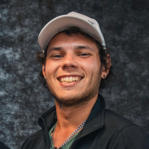
Micah Infante
Tenor technician
Micah Infante is a music educator originating from Houma, LA, where he is a tribal member of the United Houma Nation and a graduate of Ellender Memorial HS. His teaching experience spans multiple high schools along the Gulf Coast, The Cavaliers Drum &Bugle Corps, and the 2022 PIA Bronze Medalist, St. Martin Independent, where he was a quad t echnician. Micah currently resides in Dayton, OH, as a battery technician at Centerville HS.
Micah started performing in 2017 with a local drumline called Black Dog Percussion, where he
played quads and bass during Mardi Gras parades in between high school. The following
summer he began his drum corps career on bottom bass with the Louisiana Stars Drum &
Bugle Corps and marched the following season on quads. After those two summers, he is
grateful to have performed with the Louisiana State University Tigerband during the 2019 CFP National
Championship. After a gap from drum corps, he aged out with the 2022 DCI World Champion
Blue Devils, and then marched two winters at Rhythm X, earning a WGI Bronze in
2023 and Silver in 2024.
2025 is Micah ’s first season on staff with ConneXus.
Evan Sasowsky
fRONT eNSEMBLE cOORDINATOR
Evan Sasowsky is ecstatic to be back at ConneXus for another season with the front ensemble!
Evan is a front ensemble fanatic, having begun his career as a marching mallet player at the University of Cincinnati. His experience there quickly inspired him to seek independent marching activities, landing him on a marimba at the Notre Dame Indoor Percussion Ensemble (PIA/PIO) in the 2014 WGI season. This first season would prove to be the impetus that drew him to continue a passion for the marching arts, particularly in the realm of indoor pageantry. Evan followed his first season of indoor with a season at Tates Creek Indoor Ensemble (PIW), where he was the center marimba player and section leader of the front ensemble in the 2015 season. For his final two seasons as a performer in WGI, Evan chose to march at Rhythm X (PIW), where he played marimba for the 2016 and 2017 seasons. He marched his age-out DCI season in 2016 with the Crossmen Drum &Bugle Corps from San Antonio, TX.
Evan has worked with bands of all sizes in south and central Ohio, including Lakota West HS, Fairfield HS, Elder HS, Sycamore HS, Walnut Hills HS, and Conner HS. He also taught at Tates Creek/Triple Crown Indoor, Cincinnati Tradition Drum &Bugle Corps, and Columbus Saints Drum &Bugle Corps.
Evan currently lives in Cincinnati, OH, where he is a data engineer at Fifth Third Bank. He received dual bachelor ’s degrees in Business Analytics and Information Systems at the University of Cincinnati in 2022. In his free time he likes to play video and board games, go to the Ohio Renaissance Festival with his girlfriend, Barb, and play with his cats, Summer and Jackie.
2025 will be Evan’s third year on staff with ConneXus.

Ellie Mehr
Front Ensemble Consultant
Ellie Mehr is an active marching arts educator from Minneapolis, MN. Serving the Twin Cities area and beyond, she is passionate about facilitating positive experiences that encourage both musical and personal growth.
Ellie currently serves as the Co-Director and Front Ensemble Coordinator for the Irondale Marching Knights, including the 2023 WGI Percussion Scholastic A Class Champion Drumline. She is also a Front Ensemble Instructor for the Madison Scouts and a Front Ensemble Consultant for ConneXus.
In addition to her extensive experience as an educator, Ellie also performed with several marching ensembles including River City Rhythm Indoor, Minnesota Brass Drum and Bugle Corps, Minnesota Brass Indoor, and the Boston Crusaders.
Ellie graduated from the University of Minnesota with a Bachelor’s degree in Music Therapy. She currently works as a Board Certified Music Therapist assisting individuals of all ages and abilities in individual, group, and early childhood settings. Additionally, Ellie serves as Secretary of the Minnesota Percussion Association Board of Directors and was recognized as the Minnesota Percussion Association Instructor of the Year in 2021.
2025 is Ellie ’s second season on staff with ConneXus.
Domenic Santini
Front Ensemble Consultant
Dom Santini currently resides in Maumee, OH where he teaches elementary music at Airport Community Schools. He has previously studied under Dan Maslanka and Mark Stone.
Domenic marched with NorthCoast Academy (2014), Redline Percussion (2015-2016), and Madison Scouts Drum &Bugle Corps (2014-2016) where he worked with Nick Pourcho, James Sparling, Alex Klutz, and many other accomplished educators.
Currently, Domenic works with the ConneXus, Redline, and the Madison Scouts front ensembles. He most recently worked with Cap City Percussion as a front ensemble tech (2019-2024). His past includes Floyd Central High School, Walled Lake Central, Grand Blanc High School, Lakeland High School, Lake Orion High School, Lamphere High School, Novi High School, Sarah Banks Middle School and many others.
2025 is Domenic ’s first season on staff with ConneXus.
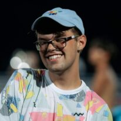
Trey Singleton
Front Ensemble Technician
Trey Singleton was a member of ConneXus for three seasons. In addition, he has performed with groups such as Madison Scouts Drum &Bugle Corps, Matrix World, the 2018 Army All-American Marching Band, and the Miamisburg HS band program.
Trey holds a dual bachelor ’s degree in Music and Biology from Wright State University. Currently, he is teaching marching band percussion at both Miamisburg HS and West Carrollton HS and has been teaching marching band since 2018.
Having performed 14 seasons on synth in both outdoor and indoor groups, Trey has many years of experience with music software programs and libraries such as Mainstage and Omnisphere.
2025 is Trey ’s third season on staff with ConneXus.
Dan Moell
Front ensemble Technician
Dan Moell is a percussion performer and educator from Dayton, OH.
He graduated with a Bachelor’s degree in Music Performance from Wright State University in 2020. Dan was a member of Rhythm X in 2017 and 2018 attended the Brevard Summer Music Festival in 2018.
As an educator, Dan has been on percussion staff at many high schools in the Dayton area. He served as Percussion Director at Northmont HS and is the current Front Ensemble Coordinator and Concert Percussion Consultant at Centerville HS.
2025 is Dan’s fourth year with ConneXus.

Aubrie Lynn
Front Ensemble Technician
Aubrie Lynn is an active percussion educator and performer local to Dayton, OH. She has performed with many independent marching organizations such as Resistance Indoor Percussion, the Madison Scouts, Rhythm X, and the Mandarins.
She has also taught many scholastic marching programs of all sizes in the greater Dayton/Cincinnati area, as well as across the country including: Westmoore HS (OK), Joplin HS (MO), Bellbrook HS (OH), Northmont HS (OH), and William Mason HS (OH).
Aubrie currently lives in Dayton and is finishing her bachelor ’s degree in Music Education at Wright State University, performing with their highly esteemed Percussion Ensemble. In her free time, she enjoys jigsaw puzzles, running, and exploring different cities with her partner Troy.

Braedon Bomgardner
Front Ensemble Technician
Braedon Bomgardner is a percussion specialist and performer based out of southern Indiana. Braedon has performed with The Cadets, Fountain City Brass Band, and the Hutchinson Symphony.
Braedon received his Bachelors in Music Performance from Kansas State University in 2022 where he studied under Dr. Kurt Gartner. During his time at KSU, he performed with their Wind Ensemble at the American Band Association in Colorado, and the Kennedy Center in Washington D.C. He also performed two solo concertos. Braedon pursued higher education at Indiana University’s Jacobs School of Music, where he graduated with his Masters in Percussion Performance under the direction of Kevin Bobo, Joseph Gramley, and John Tafoya. During his time there, he performed with the IU New Music Ensemble, Percussion Ensembles, where he performed at PASIC in 2023, Wind Ensemble, where he performed another concerto, and the NOTUS Choir where he premiered a piece with William Shatner. Braedon also spent his time collaborating with the composition department, premiering several works from IU composition students.
Braedon has an extensive teaching history, including teaching at five different high schools in Kansas, Missouri, and Indiana. He also had the privilege this past summer of working with River City Rhythm Drum &Bugle Corps from Anoka, Minnesota. Braedon currently spends the majority of his time as a percussion specialist at the Center Grove School District and the Greenwood Community School District in Greenwood, Indiana. During his time, Braedon helped bring Center Grove to their first top-5 PSW finish at the WGI World Championships in 12 years in 2023.
Braedon prides himself on bringing a culture of passion, diligence, and professionalism to the ensembles he works with. He believes that everyone, from beginner to professional, deserves the same level of education.
Braedon is elated to be working with ConneXus this winter!
2025 is Braedon ’s first season on staff.
Zach Shaw
Front Ensemble Technician
Zach Shaw is a front ensemble technician in Nashville, currently teaching at Franklin HS. He has performed with many groups including Infinity, The Cavaliers, Ancient City Ensemble, and Southwind.
He has taught a number of schools throughout the northeast Florida area and recently taught Infinity 3 for the 2023 and 2024 seasons. He also teaches at the Seattle Cascades Drum &Bugle Corps and Heat Wave Drum &Bugle Corps.
Zach is excited to work with ConneXus this season!
2025 is Zach’s first season on staff.

Andrew Seivert
Front Ensemble Consultant
Andrew Seivert is a Percussionist, Teacher, and Composer based in Dayton, OH.
Andrew received his Bachelor of Music Performance in Percussion at Wright State University. He is currently teaching percussion at Archbishop Alter High School, and teaches percussion lessons and classes in the Dayton area.
Andrew is a founding member of Neutrals, a percussion duo based in Dayton, OH that performs contemporary percussion and electronic music.
2025 is Andrew’s first season on staff.
Kristen Frederico, LPC, LSC
Visual Ensemble Coordinator & Mental Health Advisor
Kristen Frederico is an Akron, Ohio native and marched as a member of the visual ensemble for Matrix Performing Arts in 2014, 2015, and 2016. Additionally, she has consulted, choreographed and taught for several high school color guard and percussion programs throughout Ohio, becoming involved with Tippecanoe High School, Kettering Fairmont High School, Nordonia High School, Avon Lake High School, and Norton High School.
Kristen graduated from Wright State University with a Master of Education in School Counseling and a Master of Science in Clinical Mental Health Counseling. Now working in private practice, she has garnered experience working in youth partial hospitalization, serving as a school-based mental health therapist at Beavercreek High School, and working with her certified therapy dog to bring emotional support assistance and education to local area schools. Kristen is also the Director of Operations for the Psi Alpha International Honor Society for High School Psychology, a non-profit organization focused on promoting psychology as a science at the high school education level.
Kristen currently resides in Dayton, Ohio with her husband, JJ Frederico and their two dogs, Eli and Zaya.
2025 will be Kristen’s third season on staff with ConneXus.
Aylin Vural
Visual Ensemble Consultant
Native to Washington, DC, Aylin Vural currently resides in Indianapolis, IN; acting as Color Guard Director for Brownsburg High School. In addition, Aylin is a costume designer, choreographer, color guard weapon and movement trainer for varying high schools as well as independent performance companies nationwide. Her education includes Massage Therapy from Northcoast Medical Training Academy, Kent, OH with a focus in Sports Massage, 2 years studying at the Davis School of Fashion Design, West Virginia University, Morgantown, WV, and a BS in Graphic Design from Full Sail University, Orlando, FL.
Aylin has an extensive portfolio of experience in dance, solo vocal, instrumental music, and color guard. Her Drum Corps International career started in 2011 with The Glassmen and was followed by 5 consecutive years with the Phantom Regiment – serving as color guard captain for both the 2015 and 2016 seasons. She was named the Mark Glasscoe Memorial Member of the Year, by unanimous vote, in those same years. Aylin’s WGI Independent World performance career was with Matrix Performing Arts, for 5 consecutive winter seasons, primarily as a dancer and visual performer, with some instrumental performance.
Professionally, for more than a decade, Aylin has traveled North America and parts of Asia, educating young performers, developing their skills and confidence within the pageantry arts, choreographing, and set design. Currently, she is embarking upon her seventh year with the Bluecoats Drum and Bugle corps as a movement focused instructor, as well as her third year with Atlanta Quest.
She is continuing her involvement through her first year with ConneXus Performing Arts, contributing to the movement instruction, choreography, and visual consultation, while also continuing to design and choreograph for high school programs – coast to coast. She has directed and been an administrator for various programs including: Kent State University (Color Guard Director), West Virginia University (marching band member, weapons choreographer), Eloquence Performance Company (Co-Director and choreographer), Firestone High School and West Shore School District (Color Guard Director and designer), and many more. In addition to being the Brownsburg Color Guard Director, Aylin assists with design and choreography for the high school’s indoor percussion ensemble and will be teaching the new academic dance class starting in the fall of 2023.
Outside of teaching, Aylin enjoys the quest for the world’s best coffee, attending sporting events, going on hikes, and relaxing on the beach!
Megan Dufala
Visual Ensemble Technician
Megan Dufala is originally from Avon, OH. She holds a Bachelor of Science in Kinesiology, with cognate area-of-studies in Dance Performance and Education from Bowling Green State University.
Megan has marched various independent winterguard programs, including Interplay (’16, ’17), Bluecoats Indoor(’18, ’19), and Pride of Cincinnati (’21, ’22). She also marched her DCI career with the Bluecoats (’14-17).
Since her performance experience, Megan has had the opportunity to improve her instructional and athletic training skills with multiple drum corps and high schools across the country —including Campbell County High School, Mason High School, Madison Scouts DBC, Music City DBC, Legends DBC, Bluecoats, and ConneXus Performing Arts.
Currently, Megan lives in Cincinnati, OH, where she works as an assisted-stretch specialist with StretchLab and is the director ’s assistant for Campbell County High School ’s colorguard.
This will be her second season with ConneXus, and she is looking forward to the ongoing opportunity!
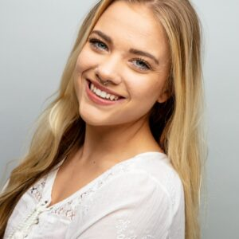
McKenzie Grzina
Visual Ensemble Technician
McKenzie is originally from the St. Louis, Missouri area and was raised in Belleville, Illinois before moving to Dayton, Ohio in 2023. She has been a dancer and performer since the age of 4 and holds a Bachelor of Arts degree in Dance and a Certificate in Paralegal Studies from Webster University in St. Louis, Missouri.
McKenzie’s performance credits in the marching arts include Belleville East High School Marching Band Dance Line 2017 and 2018; Belleville East High School Indoor Drumline 2019; Phantom Regiment Color Guard 2021 and 2022; Paramount Winterguard 2023; and ConneXus Visual Ensemble 2024. Outside of the marching arts, McKenzie has participated in workshops, classes and performances with several St. Louis based dance companies such as Metro Dance Company, Modern American Dance Company, and Consuming Kinetics Dance Company. During McKenzie’s college career, she had the pleasure of being taught by artists including Bekah Reed, Michael Uthoff, Maggie Dueker, and Xi Zhao.
McKenzie’s instructional experience includes Studio L Dance Center Ballet Instructor 2020-2022; Pattonville High School Color Guard Tech Fall 2021-Fall 2023; Kettering Fairmont High School Color Guard Tech Fall 2023-Winter 2024; and Madison Scouts Drum Corps Movement Tech 2024. In her day to day life, McKenzie works as a Legal Assistant/Paralegal and enjoys cooking, baking, finding new shows to binge, and spending time with the people (and cats) she loves.

Kaia Ro
Visual Ensemble Technician
Kaia Ro is originally from Northern Virginia and holds a Bachelor of Science in both Criminal Justice and Sociology as well as a Minor in Human Services from Old Dominion University.
Kaia started her Marching Arts career in high school, and pursued her passion by performing with the Old Dominion University Marching Band (2015); Carolina Crown (2017 –2019); Stonewall Independent (2016 –2017); George Mason University Winterguard (2018); Onyx (2019…); Rhythm X (2020); and Onyx (2022 –2024). She also had the honor of leading her fellow teammates as a Captain of the CrownGUARD 2019, and Onyx 2023 &2024.
Kaia ’s commitment led her to serve as a color guard and movement instructor at several high school programs as well as Onyx Independent A, where she had the opportunity to contribute to the development of young performers.
Currently residing in Dayton, Ohio; she works at Reynolds and Reynolds as a Variable Specialist in the Remote Software Implementation Department. Kaia loves yoga, reading, hiking, crocheting, and spending time with her three cats and fiancé, Cameron Halls.
Zach Albert
Audio Coordinator
Zach Albert has been involved in the marching arts since 1992. He is currently the audio engineer for several high school groups including Archbishop Alter High School (Kettering, OH) where he has helped win 8 state championships, multiple BOA regional class championships and multiple BOA National Semifinals placements.
Zach interned as an audio engineer with local studios and music venues. After completing his internship, he went on to work as an audio engineer for local music venues, theater productions, and recording studios.
Zach is an avid multi-instrumentalist and has performed as a musician in numerous musical theater productions and with his own bands.
Zach currently lives in Dayton with his wife of 21 years Jamie and his daughter Ashley.
Marco Iannelli
Audio Staff
Marco Iannelli is a pianist and tuba player based in Maineville, OH. A freelance musician in many ways, he works as a performer, educator, composer, and arranger. He writes music (with solo piano being his specialty) that encompasses a unique range of instrumentation, style, and genre. He also runs a freelance business, MJI Soundscape Designs, where he designs shows and arranges the music for various marching ensembles around the country. Currently, he is the program coordinator for the Licking Heights HS Marching Band and is also the brass and front ensemble arranger for The Columbus Saints Drum & Bugle Corps.
Marco is a graduate of Miami University of Ohio, with a Bachelor of Music in Performance as a piano student of Dr. Frank Huang. He also co-majored in Film Studies and minored in Composition. At Miami, he participated in their wind ensemble, symphony band, jazz ensemble, and marching band as a drum major in 2021. He also served as the music director for Miami’s chapter of Phi Mu Alpha Sinfonia. He was a finalist for the Geoffrey P. Hall Undergraduate Artists Competition in 2021, and graduated as a finalist for the Outstanding Performer Award for the Class of 2022, voted on by the faculty of the music department.
Marco marched tuba for t he Madison Scouts from 2018-2021 (serving on the leadership team his final year), and was a synth player for Rhythm X from 2019-2023, receiving a silver medal in 2022, and a bronze medal in 2023. Marco was on Brass Staff with t he Troopers from 2023-2024, and was a member of the 2024 Bluecoats Fellowship, a mentorship program where up and coming designers work with the Bluecoats Design Team. He also works on the marching band brass staff at William Mason HS and West Clermont HS , as well as the indoor percussion staff at Springboro HS .
2025 is Marco ’s second season on staff with ConneXus.
Carlee McAfee
Media Coordinator
Carlee has been a part of the marching arts for almost a decade. Her time in the activity began at Westerville North High School where she was a member of the Westerville Indoor Percussion Ensemble, WGI Scholastic A Bronze Medalists. She graduated in 2017 and then transitioned to staff. She was the Visual Coordinator there from 2019-2021.
Carlee was a trumpet player for The Colts Drum and Bugle Corps from 2017-2018. She was
also a cymbal player for ConneXus from 2017 through their transition into World Class in 2019.
She has taught at several high schools around Ohio including Westerville North, Central Crossing, and Kettering Fairmont. She has also taught cymbals and choreographed for Westerville Independent Percussion. In addition, Carlee was a member of the Visual Staff and a photographer for the 2023 ConneXus season.
Carlee currently serves as a Movement Designer for JJ Visual Design and choreographs for marching bands across the country. She is also a photographer for J.Honey Media.
Outside of the marching arts, Carlee graduated in 2020 with a Bachelor’s of Arts in Communications from The Ohio State University with a focus in New Media and Communication Technology.

Tim Wiencek
Media STaff
Tim Wiencek started his marching career at Olentangy Liberty High School in 2013. After high school, Tim attended Ohio University and participated in the Marching 110. He has also marched tenors in DCA for the Erie Thunderbirds in 2018 and in WGI for ConneXus in 2022. He has also taught at multiple high schools throughout Ohio.
Tim holds a Bachelor of Science in Integrated Media and Marketing with a focus on video production from Ohio University. He currently works in marketing in Columbus, Ohio while freelancing video projects.
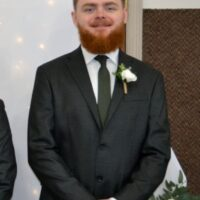
Logan Kozee
Media STaff
Logan started his marching career at Bellbrook HS in 2014 and graduated in 2018. He played bass drum in ConneXus from 2022 through 2023, ConneXus ’first year making WGI Finals in PIW.
Logan attended Sinclair Community College, earning an A.A.S in Cyber Security.
He teaches the drumline at Beavercreek HS, teaching both the marching band and indoor percussion since 2023. In 2023, Beavercreek was the WGI Silver Medalist in PSA and was a WGI Finalist in 2024, their first season in PSO.
2025 is Logan ’s first year on staff with ConneXus.